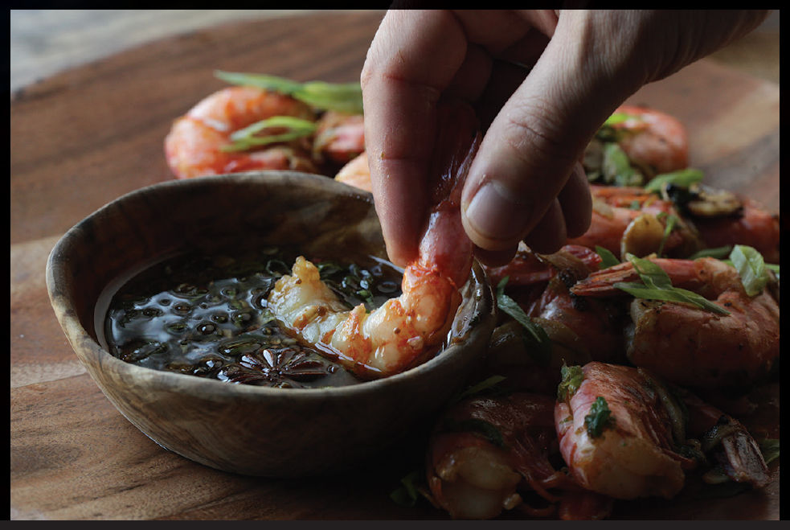

PEEL-AND-EAT SHRIMP WITH GARLIC, SCALLIONS, AND CHILES
|
Yield Serves 4 |
Active Time 10 minutes Total Time 25 minutes |
12.5 grams is about 1⅓ tablespoons Diamond Crystal kosher salt, 1 tablespoon Morton’s kosher salt, or 2½ teaspoons table salt. This recipe is especially good with small live shrimp, such as amaebi (a variety of pink shrimp) or Royal Red shrimp, which are caught wild off the Gulf Coast and have an extrasweet, rich flavor.
INGREDIENTS
For the Shrimp:
2 cups (500 ml) very cold water
12.5 g salt (see Notes)
2 teaspoons (10 g) baking soda
1 pound (450 g) shell-on shrimp (see Notes)
A cup or so of ice cubes
For the Stir-Fry:
3 tablespoons (45 ml) peanut, rice bran, or other neutral oil
8 medium garlic cloves (20 to 25 g), cut into ⅛-inch slices
1 fresh hot green chile, such as serrano, jalapeño, or Thai bird, thinly sliced
2 scallions, thinly sliced on a bias
Kosher salt and freshly ground white pepper
1 recipe Soy and Fragrant Oil Dipping Sauce (optional; here)
There are few things my wife, Adri, loves more than sitting at a table (or on the beach) and slowly and steadily turning a pile of shrimp into a pile of shrimp shells with nothing but her bare hands (and perhaps a bib). Good shrimp are so flavorful that even a quick stir-fry in olive oil or caiziyou and no seasoning beyond some salt can yield delicious results, but I love the combination of sweet slices of fried garlic and shrimp. The garlic picks up the shrimp flavor, and the shrimp in turn get some of the garlic. I don’t know who gets the better end of that deal, but I do know that everyone comes out a winner.
DIRECTIONS
1For the Shrimp: Combine the water, salt, and baking soda in a bowl and stir until the salt and baking soda are dissolved. Add the shrimp and stir to separate them and ensure the brine flows all around. Add the ice cubes and let the shrimp brine for at least 15 minutes and up to 30. Drain thoroughly and pat dry on paper towels or spin in a paper-towel-lined salad spinner.
2For the Stir-Fry: Heat a wok over high heat until lightly smoking. Add the oil and swirl to coat. Immediately add the garlic and chiles and stir-fry until the garlic is turning pale golden brown around the edges, 15 to 30 seconds. Add the drained shrimp and stir-fry until barely cooked through, about 1 minute. Add the scallions and season with a big pinch of salt and white pepper. Transfer to a serving platter and serve immediately with dipping sauce, if desired.
